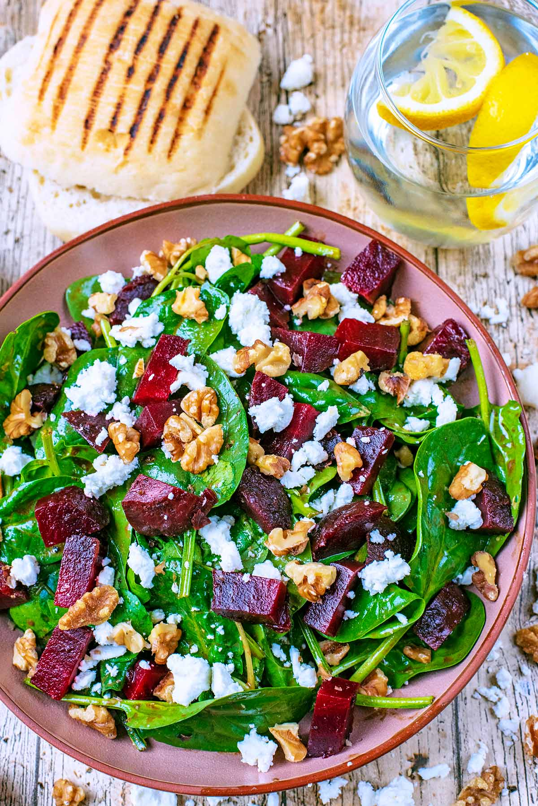

Beet and Goat cheese Salad

Description
This delicious beet salad with creamy goat cheese, maple-candied walnuts, and a tangy orange
and balsamics Vinaigrette is a beautiful and tasty way to serve beets.
Ingredients
- 4 medium beets - scrubbed,trimmed,and cut in half
- 1/3 cup chopped walnuts
- 3 tablespoons maple syrup
- 1 (10) ounce packaged mixed baby salad greens
- 1/2 cup frozen orange juice concentrate
- 1/2 cup extra virgin olive oil
- 2 ounces goat cheese
Steps
-
Place beets into a saucepan; add enough water to cover, Bring to a boil, then cook for
20 to 30 minutes, until tender. Drain and cool, then cut into cubes.
-
While beets are cooking, place walnuts in a skillet over medium-low heat. Heat until warm
and starting to toast. Stir in maple syrup; cook and stir until evenly coated, then remove
from heat and set aside.
-
To make the dressing: Whisk orange juice concentrate, balsamic vinegar,and olive oil together
in a small bowl.
-
Place a large helping of baby greens onto each of four salad plates, divide candied walnuts
equally and sprinkle over greens. Place equal amounts of beets over greens and top with pieces
of goat cheese. Drizzle dressing over each salad.